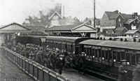
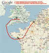
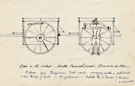
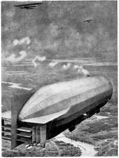
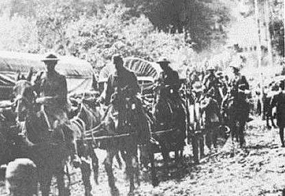
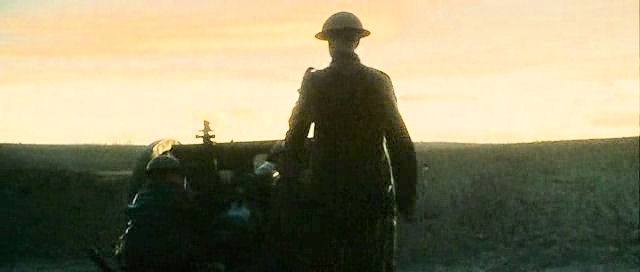

|
JANVIER, tôt le matin du Nouvel An, l'unité D.A.C.
se sépare en trois et marche sous la pluie et
les vents forts vers leurs nouveaux camps à West Lavington,
Great Cheverell et Potterne. Les hommes sont trempés mais
heureux de mettre les chevaux à l'abri et de se retrouver dans
des camps plus confortables avant la nuit.
Les exercices se poursuivent, la rivière Avon est très haute et les routes impraticables. Charles assiste à un concert donné par
les gens de Potterne pour divertir la troupe. Le 14 janvier, toujours sous la pluie, les hommes reçoivent
avec beaucoup de satisfaction du nouvel équipement, dont des
bottes dont ils avaient ardemment besoin, certains étant
quasiment nu-pieds.
Le 16 janvier, une inspection des chevaux a lieu à Potterne dans
Eastwell Farm. Les chevaux sont
jugés en bonne condition. Le dimanche suivant, les troupes ont un service divin dans les
églises locales. Charles assiste à une messe catholique au Market
Lavington de Devizes. Enfin du beau temps, les routes s'assèchent, le transport d'équipement et
les manoeuvres reprennent. Le 22 janvier il tombe deux pouces de neige. Les jours suivants la
température est belle et froide. Les leçons apprises sur
les champs de bataille par les britanniques sont transmises aux
Canadiens.
FÉVRIER, le D.A.C. est maintenant
complet en wagons et harnais, mais il manque encore plusieurs
articles et quelques chevaux. Le major va en personne à
Salisbury pour les réclamer. La pluie recommence. Le 4 février, la division
canadienne reçoit de nouveau la visite du Roi devant lequel
elle parade.
EN
ROUTE VERS LE FRONT OUEST
Tôt le matin, lundi 8 février, le D.A.C. reçoit l'ordre de se rendre à la gare de Lavington
avec tout son équipement.  L'unité est divisé en
huit sections. Dès la fin de l'après-midi, par intervalles de
trois heures, chaque section marche vers la gare et y prend un
train vers Avonmouth. C'est un port sur la Severn, près de
Bristol, dans l'ouest de l'Angleterre.
La température est belle, la "force" du D.A.C. est
de quatorze officiers, quatre cent soixante et un soldats,
cinq cent quatre-vingt-seize chevaux, dix-huit mules, quatre bicyclettes,
quatre-vingt-dix-neuf wagons, trois motos.
Tous les trains arrivent à l'heure à Avonmouth. Mais, l'unité
D.A.C. ne pouvant embarquer au complet sur un seul navire, il y a confusion
et perte de matériel, dont des roues de wagons et neuf chevaux.
 Du 9 au 11 février, plusieurs bateaux prennent la mer, sous la
pluie. Charles fait partie du groupe qui embarque le 11
février. Par la Severn, ils entrent dans l'Atlantique, contournent
l'ouest de la Bretagne et jettent l'ancre à St-Nazaire, un peu au
nord-ouest de Nantes.
(ce long détour par mer a pour but d'éviter les mines,
placées dans la Manche par les deux camps ennemis, et les U-boats
et les bateaux de la flotte allemande qui patrouillent la Manche)
 On débarque l'équipement au fur et
à mesure que les bateaux accostent. La première division
canadienne arrive sur le sol français, soit six cent dix officiers et
plus de dix-sept mille soldats, sous le commandement du major Currie.
(ci-contre une peinture d'Edgar Bundy, des archives de
l'Ontario). On débarque l'équipement au fur et
à mesure que les bateaux accostent. La première division
canadienne arrive sur le sol français, soit six cent dix officiers et
plus de dix-sept mille soldats, sous le commandement du major Currie.
(ci-contre une peinture d'Edgar Bundy, des archives de
l'Ontario).
La
troupe campe à St-Nazaire. Le 13 février, quatre trains sont à
la disposition de l'unité D.A.C. À la fin de chacun on ajoute des wagons
dans lequel on charge l'équipement, ce qui n'est pas une mince tâche. Le premier train part
en début de soirée., les
autres suivent à trois heures d'intervalle chacun. Le
lendemain matin, le premier train arrive à Angers, où on abreuve
et nourrit les chevaux. À midi, le train atteint Le Hutt
Colombier. Du café chaud attend les hommes, café servi par
les gentilles infirmières de la Croix-Rouge française. À
minuit, il est passé Rouen. Les
chevaux supportent bien le voyage, il y avait suffisamment de
cordes pour qu'ils soient bien attachés.
Le
15 février, le train arrive à Abbeville. Du café chaud pour
les hommes et de l'eau pour les chevaux. Le train repart en
début d'avant-midi et arrive à Boulogne plus de deux
heures plus tard. Il y reste bloqué
sur la voie jusqu'en fin d'après-midi. car il y a trop de trafic sur la
ligne ferroviaire devant eux. Finalement, le train arrive en fin
de soirée à Hazebrouck,
dans le nord-est de la France. Après un trajet en train
de
plus de deux jours, le débarquement de l'équipement débute.
Les soldats apprécient la gentillesse des habitants envers eux. Deux
interprètes locaux, M. Fabre et le Dr Parrel, les ont rejoints à la
gare et vont les guider vers leur campement, une ferme des
environs. La température est
belle et douce.
La troupe quitte la gare après minuit. En chemin,
dix wagons se renversent en traversant un
fossé, ce qui retarde tout le monde. Au milieu de la nuit l'unité
entend ses premiers tirs d'artillerie en provenance
du front. Les hommes s'installent enfin, au petit matin, dans
un campement à l'arrière du front ouest. On le nomme #4 brigade area,
il est sous le commandement du colonel
britannique Penhole. Membre de l'empire
britannique, le Canada est intégré à part entière à
l'armée britannique, et soumis à leur loi. Le
19 février, un colonel et un commandant visitent le camp. Les
ordres sont de continuer l'entraînement des hommes. Un
maréchal ferrant s'occupe des chevaux qui récupèrent de leur
voyage en mer et en train. "Ready for action". Des tirs d'artillerie sont entendus à
l'est du camp. UN ANNIVERSAIRE AUX ARRÊTS POUR
CHARLES Le 21 février, les
hommes du D.A.C. reçoivent leur paie. Ce
jour-là Charles prend la poudre d'escampette. Sa fugue dure
trois jours. Part-il seul, ou avec des camarades? Revient-il de
lui-même, ou est-il repris par la police militaire? Il
est mis aux arrêts et jugé à Caestre. L'offense est "absent
without leave"
(absence sans permission). La sanction est "field punishment #2"
pendant quinze jours, plus une amende de dix-huit jours de solde, soit 19,80$
qui sont débités de son compte bancaire.
LE 28 FÉVRIER 1915, CHARLES A 22
ANS.
Pour cet anniversaire,
loin de sa famille et de son pays, Charles est aux arrêts. Il a
voulu prendre du bon temps après des mois d'entraînement et avant que la vraie guerre ne débute
bientôt pour lui .
Discipline et peines
L'obéissance et l'ordre constituent l'épine dorsale de tout
système militaire. Le but du droit militaire, contrairement au
droit en général, est d'assurer la cohésion et la victoire
grâce à la discipline, et non la justice.
Les cours martiales de régiment jugent les délits mineurs alors que les cours
martiales générales sont réservées aux infractions graves. L'ivresse
est le manquement à la discipline le plus
courant, alors que la désertion, la lâcheté et l'abandon de son
poste sont des délits plus graves pouvant entraîner la peine
de mort..
Les peines les plus communes sont l'emprisonnement, l'amende et la rétrogradation. Les commandants
imposent également le field punishment. #1 OU
#2. La peine # 1,
surnommée la "crucifixion" par les soldats,
consiste à accomplir divers travaux et à être attaché à un
poteau ou à une roue deux heures par jour. Les soldats considèrent
la peine # 1 comme particulièrement dégradante. La
peine # 2 diffère uniquement en ce que
le soldat n'est pas attaché à un objet fixe.
|
 Voici un dessin, fait par le soldat Thomas Fisher,
représentant la Peine en campagne #1, surnommée
"cruxcifixion" par les soldats. Les soldats étaient
attachés pendant deux heures par jour. Immobilisés par des liens, les soldats ne pouvaient
ni bouger ni se gratter pour se soulager de sources d'irritation
courantes comme les mouches et les poux.
|
|
|
|
MARS le 11, Charles réintègre son unité
qui est près
de Doulieu depuis le 2 mars. Le D.A.C. travaille au transport de munitions et
d'équipement entre le centre de ravitaillement de Caestre et
les différentes brigades qui ont fait des réquisitions. On entend bien les tirs d'artillerie en
provenance du front, et la nuit on voit le ciel qui s'éclaire
sous les tirs.
 Le froid et la neige reprennent les jours
suivants. Le 20 mars un dirigeable allemand lance une bombe le
matin sur la ville d'Estaires. Le dimanche 21 mars, la
température est belle, un service divin catholique romain est
offert. Les troupes sont heureuses et
en parfaite santé, selon le journal de l'unité.
CHARLES
DEVIENT UN ARTILLEUR Le 24 mars, une réorganisation de la première
division canadienne amène le transfert de treize hommes du D.A.C.
vers une unité d'artillerie lourde, le 1st Canadian
Heavy Battery. Charles est un de ces hommes, il devient un artilleur (gunner).
Charles rejoint, près de Fromelles, sa nouvelle unité. Celle-ci
n'existe que depuis six semaines.
Après avoir supporté l'attaque de Neuve Chapelle le 10 mars, le
1st canadian Heavy Battery se concentre, le reste du mois, sur diverses
cibles des environs. Il fait
très froid, et Charles s'initie à ses nouvelles tâches, et à ses
nouveaux frères d'armes.
 AVRIL, le 1er,
par doux temps, l'unité bouge vers un nouveau campement plus
au nord, à Doulieu. Elle y arrive en fin de soirée. Cinq
jours plus tard, elle se dirige encore plus au nord, vers
Steenvoorde. Les soldats logent dans
deux fermes d'une commune de Terdeghem. Le sous-officier
constate, dans le journal de guerre de l'unité, qu'une unité
d'artillerie lourde ne peut avancer aussi vite que les brigades
d'infanterie!
Elle doit souvent céder le passage sur les routes encombrées.
Le 6 avril, le froid, la pluie et le vent
reprennent. Les troupes font les exercices
habituels. Le 15 avril, par un temps plus printanier, l'unité retourne au Front, vers le
sud. Elle campe une nuit à Neufberquin, puis continue vers La Couture, où elle
arrive en fin de soirée. Les canons sont placés en position durant
la nuit. Ils partagent le bivouac de la 110e
Battery RGA (Royal Garrison Artillery), une unité britannique.
 Le
18 avril, le 1st Canadian
Heavy Battery entre en action, les salves (voir
note plus bas) sont
dirigées vers des cibles de Lorgies et Violaines, des villes à
environ cinq kilomètres plus au sud. Il en est ainsi tous les
jours, la cadence est moyenne, les cibles varient peu, l'église, la distillerie, les
routes et certaines maisons nommées dans le journal "une
maison au pignon rouge" ou "la petite maison grise à
l'ouest". Certains tirs ont pour but de tester les canons. D'autres tirs viennent en
appui aux aéroplanes qui prennent des relevés sur le terrain. Le
18 avril, le 1st Canadian
Heavy Battery entre en action, les salves (voir
note plus bas) sont
dirigées vers des cibles de Lorgies et Violaines, des villes à
environ cinq kilomètres plus au sud. Il en est ainsi tous les
jours, la cadence est moyenne, les cibles varient peu, l'église, la distillerie, les
routes et certaines maisons nommées dans le journal "une
maison au pignon rouge" ou "la petite maison grise à
l'ouest". Certains tirs ont pour but de tester les canons. D'autres tirs viennent en
appui aux aéroplanes qui prennent des relevés sur le terrain. Chaque
jour le sous-officier responsable de tenir le journal de
l'unité note le nombre exact de salves (rounds) tirées,
leurs cibles, et le résultat, dans
certains cas. Il en sera ainsi pour toute la durée de la
guerre. Selon l'intensité des tirs, et la position de la
batterie, nous pouvons en déduire à quelles batailles l'unité
a pris part, et Charles, par le fait même. Car, il va sans
dire, le sous-officier n'écrivait pas: "aujourd'hui
commence la bataille de ....". C'est l'histoire qui a
donné leur nom aux batailles décisives. Mais, en fait, la
guerre était continuelle, les tirs quasi quotidiens...
N.B.
Pour bien se mettre dans le contexte, rappelez-vous que, quand on parle
de "salves" (rounds), cela signifie que chaque
canon de l'unité tire un coup. Donc, s'il y a dix canons, une
salve signifie dix coups de canon tirés ensemble. Imaginez le
bruit les jours où des centaines, et même des milliers, de
salves sont tirées. Sans compter que les unités d'artillerie
sont souvent regroupées... N'oublions pas non plus que, dès que
repérées par l'ennemi, elles deviennent des cibles.


|